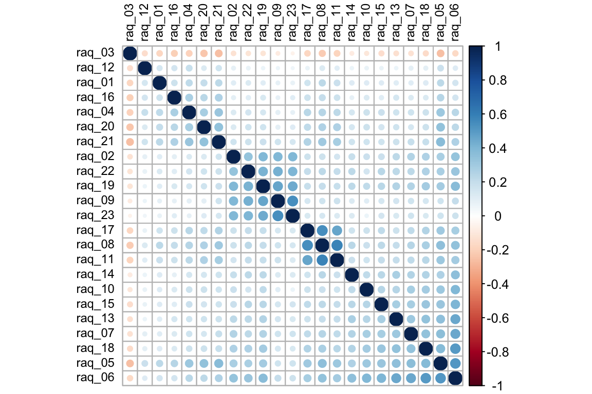
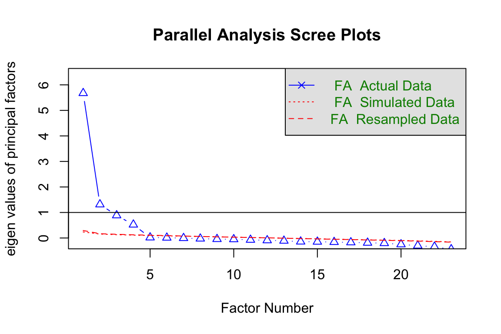
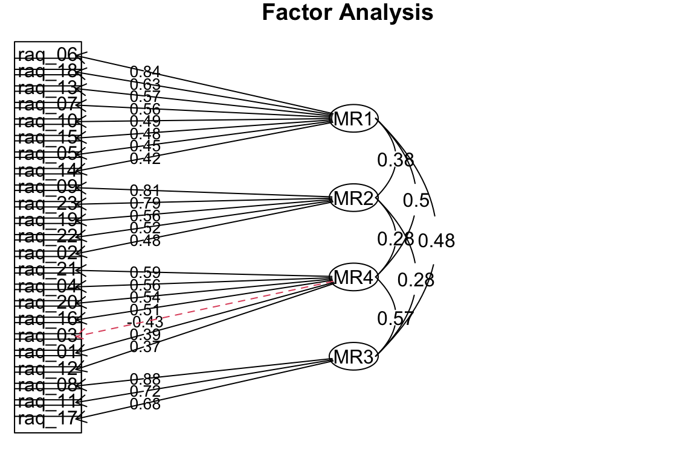

Merkmale von Fällen wie Personen, Gruppen oder Inhalten usw. werden gemessen und als Variablen gespeichert. Die möglichen Merkmale einer zu messenden Population (GG) spannen einen Merkmalsraum mit vielen Merkmalsdimensionen auf. Das kann man sich tatsächlich auch räumlich vorstellen. Wenn zum Beispiel allen Befragten mehrere Fragen zu ihrer Medienzufriedenheit auf einer 5er-Skala gestellt werden, dann kann jeder bei jedem zu bewertenden Medium. Zum Beispiel könnte Axel bei der SRG1 eine 2 vergeben, weil er sie nicht so gut findet, Bernd eine 4 für eine bessere Bewertung usw. Bei der Bewertung von 3+ gibt Axel eine 4 und Bernd eine 3. Die Bewertungen für die SRG1 könnten wir auf eine X-Achse legen und die Bewertungen für 3+ auf eine Y-Achse. Damit hätten wir einen Merkmalsraum von zwei Dimensionen (da klingt es mit dem Raum noch komisch, wird aber einfach immer so genannt). Hätten wir noch ein drittes Medium, wie zum Beispiel RTL+, dann könnte man das auf eine Z-Achse packen, die dann die dritte Dimension wäre und damit auch im alltagssprachlichen ein schöner Merkmalsraum mit drei Merkmalsdimensionen. Allerdings gibt es da noch TV-Ostschweiz, tele bärn, 4+, Pro7, ARD, SRG2 usw. Das heisst, wir haben in der Normalität einen viel grösseren Merkmalsraum mit etlichen Merkmalsdimensionen. Nun kann es interessant sein, ob hinter den unterschiedlichen Bewertungen der Medien unterschiedliche zugrundeliegende Vorlieben stecken. Es könnte doch sein, dass viele Leute aus einem bildungsbürgerlichen Anspruch heraus eher Arte, 3SAT, öffentlich rechtlichen wie die Sender der SRG oder ARD und ZDF besser bewertet als die privaten kommerziellen bzw. regionalen Sender. Andere finden vielleicht generell die öffentlich rechtlichen Sender blöd, weil sie ihnen Staatsnähe unterstellen oder sie Gebühren zahlen müssen. Es könnte also zugrundeliegende bzw. latente Merkmale geben, die zu den Einzelbewertungen auf den Dimensionen führen. Wenn dem so ist, dann müssten die Variablen, die zu einer latenten Dimension gehören, stark miteinander korrelieren, also z.B. alle Bewertungen zu den öffentlich-rechtlichen Sendern. Das bedeutet, wir könnten diese Bewertungen auch auf diese latente Dimension reduzieren. Zack fertig: Dimensionsreduktion!
Faktorenanalysen dienen genau dieser Dimensionsreduktion. Sie werden eingesetzt, um latente Konstrukte zu identifizieren, die die Ausprägungen der gemessenen (manifesten) Variablen bestimmen bzw. determinieren. Wir setzen die Faktorenanalyse aber auch ein, um z.B. das Problem der Multikolliniearität bei Regressionsanalysen in den Griff zu kriegen. Das Ziel der Faktorenanalyse ist es daher, eien Vielzahl an Variablen auf wenige zugrundeliegende Faktoren zu reduzieren, die man dann gut und klar unterscheiden kann, die also nicht oder nur wenig miteinander korrelieren.
Die Schritte der Faktorenanalyse sind: 1. Voranalyse über Korrelationstabellen (Ausschluss von Variablen, die mit keiner anderen korrelieren) 2. Extraktion der Faktoren 3. Bestimmung der Anzahl Faktoren (Scree Plots der Eigenwerte) 4. Rotation der Faktoren (bessere Verteilung der Varianzaufklärung) 5. Eignung für die Variablen über Kommunalitäten (ggf. Ausschluss gering abgebildeter Variablen mit Kommunalitäten < .4) 6. Interpretation und Benennung der Faktoren 7. Speichern der Faktoren (eine Form der Indizes) für weitere Analysen, wie Regressionen
5.1 The R Anxiety
Als Beispiel wird hierfür die R-Angst-Skala von Andy Field [@Field2022] verwendet. Die Fragen und zugehörigen Variablen sind:
raq_01: Statistics make me cry
raq_02: My friends will think I’m stupid for not being able to cope with R
raq_03: Standard deviations excite me
raq_04: I dream that Pearson is attacking me with correlation coefficients
raq_05: I don’t understand statistics
raq_06: I have little experience of computers
raq_07: All computers hate me
raq_08: I have never been good at mathematics
raq_09: My friends are better at statistics than me
raq_10: Computers are useful only for playing games
raq_11: I did badly at mathematics at school
raq_12: People try to tell you that R makes statistics easier to understand but it doesn’t
raq_13: I worry that I will cause irreparable damage because of my incompetence with computers
raq_14: Computers have minds of their own and deliberately go wrong whenever I use them
raq_15: Computers are out to get me
raq_16: I weep openly at the mention of central tendency
raq_17: I slip into a coma whenever I see an equation
raq_18: R always crashes when I try to use it
raq_19: Everybody looks at me when I use R
raq_20: I can’t sleep for thoughts of eigenvectors
raq_21: I wake up under my duvet thinking that I am trapped under a normal distribution
raq_22: My friends are better at R than I am
raq_23: If I am good at statistics people will think I am a nerd
5.2 Korrelationsmatrix
Die Korrelationsmatrix ist die Basis für Faktorenanalysen (im Grunde braucht man nur die Korrelationsmatrix (+ Fallzahl) und die ursprünglichen Daten nicht). Mit dem folgenden Befehlen kann man sich die Korrelationsmatrix rausgeben lassen.
# Lade den Datensatz "raq.csv" aus dem Ordner discovr_csv, den man hier herunterladen kann: https://www.discovr.rocks/csv/discovr_csv.zipraq.tib <- readr::read_csv("data/discovr_csv/raq.csv")## Rows: 2571 Columns: 24## ── Column specification ──────────────────────────────────────────────────────────────────## Delimiter: ","## chr (1): id## dbl (23): raq_01, raq_02, raq_03, raq_04, raq_05, raq_06, raq_07, raq_08, raq_09, raq_...## ## ℹ Use `spec()` to retrieve the full column specification for this data.## ℹ Specify the column types or set `show_col_types = FALSE` to quiet this message.# Lösche die Variable "id", die ganz vorne im Datensatz stehtraq_items_tib <- raq.tib |>select(-id)# Berechne die Korrelationen für alle Variablen mit allen Variablen (items)raq_cor <- raq_items_tib |>cor()# Gebe einen Korrelationsplot mit dem Paket "psych" raus. #psych::corPlot(raq_cor, upper = FALSE)# Sortiere die Variablen danach, wie stark sie miteinander korrelierenorder.FPC <- corrplot::corrMatOrder(raq_cor, order ='FPC')order.hc <- corrplot::corrMatOrder(raq_cor, order ='hclust')# Speichere die Ordnung als Matrixraq_cor.FPC <- raq_cor[order.hc, order.hc]# Schönere Korrelationsplots gibt es mit dem Paket "corrplot" und dem Befehl "corrplot"corrplot::corrplot(raq_cor.FPC, tl.col='black', tl.cex=.75)

Korrelationsplot
Man sieht hier schon, dass die Korrelationen nicht wahnsinnig gross sind, aber sich wie Haufen bilden. Die Variablengruppen, die untereinander hoch korrelieren, gehen vermutlich auf ein gemeinsames latentes Konstrukt zurück. Diese latenten Konstrukte werden im Folgenden auch als Faktoren bezeichnet.
5.3 Anzahl Faktoren bestimmen
Wenn wir eine Faktorenlösung suchen, müssen wir erstmal die Anzahl sinnvoller Faktoren bestimmen. Das geht mit dem «psych»-Paket und der Analyse «fa.parallel». Dort werden die Eigenwerte (eigen values) der Faktoren angezeigt. Die Eigenwerte sind der Anteil der Varianzaufklärung eines Faktors relativ zur Anzahl der Variablen in der Faktorenanalyse. Wenn also ein Eigenvalue bei 1 ist, erklärt ein Faktor so viel wie eine einzelne Variable.
## Parallel analysis suggests that the number of factors = 4 and the number of components = NA

Analyse zur Bestimmung der Faktoren (über roter Linie)
Im Plot kann man sehen, dass der erste Faktor einen Eigenwert von knapp 6 hat, also so viel Varianz aufnimmt, wie sechs Variablen im Ursprung. Der zweite Faktor ist noch über 1. Das bedeutet, er erklärt etwas mehr als eine Ursprungsvariable. Der dritte und der vierte Faktor erklären etwas weniger als eine Variable. Da das alte Kaiser-Kriterium (Eigenwerte müssen über 1 sein) etwas sehr holzschnittartig ist, haben sich findige Statistiker ausgedacht, dass man die FA simulieren könnte, unter der Annahme, dass die Faktoren nichts erklären. Diese Simulation durch mehrfaches ziehen von Stichproben aus den Daten (FA Resampled Data) ergibt, dass 4 Faktoren mehr besser sind als die informationslose Simulation. Also ist die Faktorlösung 4.
5.4 Faktorladungen und Uniqueness
Mit dieser Analyse können wir jetzt die Faktorenanalyse rechnen. Als Anzahl «n» der Faktoren (nfactors) geben wir die 4 aus der Analyse von oben ein (siehe Abbildung @ref(fig:Parallelanalyse)).
Die Uniqueness ist der Varianzanteil, den eine Variable ganz alleine hat, also nicht mit den anderen teilt. Die Uniqueness ist das Gegenteil von Kommunalität (Communality), also der gemeinsamen Varianz mit der Faktorenlösung. Rechnerisch ergibt sich je Variable die Uniqueness aus 1 - Kommunalität. Hohe Uniqueness bedeutet, dass eine Variable nicht gut in die Faktorenanalyse passt, weil sie eben nicht gut durch die Faktoren abgebildet wird, sondern einzigartig (unique) ist. Für die Variable selbst und ggf. für ihre Integration in ein Modell ist eine hohe Uniqueness gut, da sie auch bedeutet, dass es keine Probleme mit Multikollinearität gibt. Die Variable kann also getrost aus der Faktorenanalyse entfernt und als eigenständige Variable in eine Modell aufgenommen werden.
Die Complexity gibt an, wie viele Faktoren gebraucht werden, um die Variable abzubilden. Wenn sie 1 ist, dann wird eine Variable von einem Faktor abgebildet. Ist sie zum Beispiel 1.97 braucht es zwei Faktoren, um die Variable darzustellen. Geringe Komplexität ist in dem Fall gut, da sie zu einer klaren Faktorenlösung führt.
Mit dieser Faktorenlösung können wir jetzt die Faktoren interpretieren.
Der erste Faktor lädt hoch auf folgenden Items. Wir können diesen Faktor als l «Probleme mit Computern»** labeln:
raq_05: I don’t understand statistics
raq_06: I have little experience of computers
raq_07: All computers hate me
raq_10: Computers are useful only for playing games
raq_13: I worry that I will cause irreparable damage because of my incompetence with computers
raq_14: Computers have minds of their own and deliberately go wrong whenever I use them
raq_15: Computers are out to get me
raq_18: R always crashes when I try to use it
Beachte: Das Item «raq_05» lädt auch hoch auf dem zweiten Faktor MR2.
Wenn man die Fragen anschaut, die hoch auf dem zweiten Faktor MR2 laden, deuten darauf hin, dass es die Befragten Angst haben, von ihren Peers komisch angesehen zu werden. Nennen wir diesen Faktor «Angst vor sozialer Bewertung»:
raq_02: My friends will think I’m stupid for not being able to cope with R
raq_09: My friends are better at statistics than me
raq_19: Everybody looks at me when I use R
raq_22: My friends are better at R than I am
raq_23: If I am good at statistics people will think I am a nerd
Beim Faktor MR3 wird deutlich, dass es hier eine Angst vor Statistik gibt. Nennen wir den Faktor «Angst vor Stastik»:
raq_01: Statistics make me cry
raq_03: Standard deviations excite me
raq_04: I dream that Pearson is attacking me with correlation coefficients
raq_05: I don’t understand statistics
raq_12: People try to tell you that R makes statistics easier to understand but it doesn’t
raq_16: I weep openly at the mention of central tendency
raq_20: I can’t sleep for thoughts of eigenvectors
raq_21: I wake up under my duvet thinking that I am trapped under a normal distribution
Bei den übrigen Fragen, die auf dem Faktor MR4 laden, geht es eher um Mathematik. Wir könnten also sagen der Faktor MR4 ist «Angst vor Mathe».
raq_08: I have never been good at mathematics
raq_11: I did badly at mathematics at school
raq_17: I slip into a coma whenever I see an equation
Wir können noch schauen, ob die Variablen mit Doppelladungen plausibel sind. Also schauen wir zum Beispiel auf das Item raq_05 «I don’t understand statistics». Das scheint mit einer geringen Selbstwirksamkeit in Bezug auf Computer und Statistik zusammenzuhängen. Es spiegelt die Selbsteinschätzung wieder, dass man Statistik und Computer «nicht kann».
5.6 Faktorendiagramm
Faktorenanalysen kann man mit solchen Diagrammen darstellen. Hier sieht man auch, wie stark die einzelnen Faktoren miteinander korrelieren, wenn man die Faktoren nicht gezwungen hat, orthogonal zu sein, also unkorrliert.

Faktorendiagramm
## Warning: ggrepel: 15 unlabeled data points (too many overlaps). Consider increasing
## max.overlaps
## Saving 6 x 4 in image
## Warning: ggrepel: 14 unlabeled data points (too many overlaps). Consider increasing
## max.overlaps